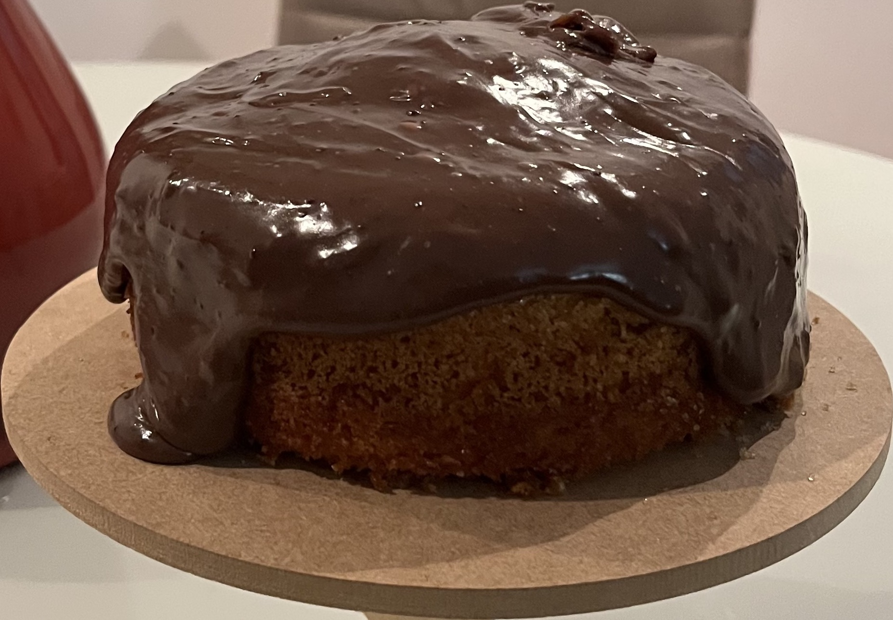

Brazilian Carrot Cake

Description
This is a typical Brazilian recipe, that is a version of carrot cake that you may follow in love with. Instead of spicy it is sweet and finished with a chocolate sauce. That's a great recipe to try this weekend and impress your friends.
Portions:12
Ingredients
- 3 large carrots
- 1 cup of soy oil
- 3 cups of flour
- 1 teaspoon of baking powder
- 3 eggs
- 3 cups of refined sugar
- butter and granulated sugar enough to grease the pan
Steps
Cake
- Pre heat the oven at 180°C
- Grease the pan with the butter and add granulated sugar, only enough t stick to the butter
- In a blender, mix the eggs, the oil and the chopped carrots.
- In a bowl, place the flour, the sugar and mix until a homogeneous mixture is obtained.
- To this mixture, add what was mixed in the blender.
- Add the baking powder and mix kindly.
- Pour the cake into the pan and place it in the pre heated oven for 30 minutes.
- After 30 minutes, open the oven and pierce the middle of the cake with a fork. If the fork comes out dry, your cake is ready, if not, let more 10 minutes and check it again. DO NOT OPEN THE OVEN BEFORE 30 MINUTES.
- When ready, turn off the oven and let the cake cool off a little bit before getting it out of the pan. DO NOT TRY TO TAK THE CAKE OUT OF THE PAN WHILE IT'S TOO HOT.
Chocolate Sauce
- In a pan, add a tablespoon of butter, 1 can of condensed milk and 1/3 of a cup of chocolate powder.
- Mix over low heat to obtain a homogeneous mixture.
- When the mixture is coming off the bottom of the pan, turn off the heat.
- Once the cake is ready and already out of the pan, pour the chocolate sauce on top of the cake.